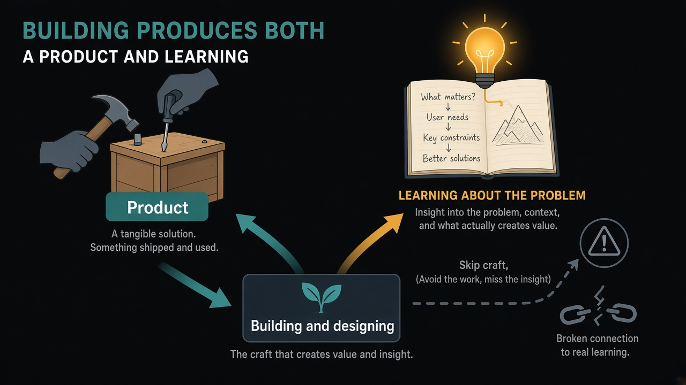

Building produces the product and the learning — don't lose the second one
Source: Karri Saarinen via Lenny Rachitsky (@lennysan)
original post
What it claims
Linear CEO Karri Saarinen, clipped by Lenny Rachitsky: making products produces two outputs — the product, and the learning. The effort of building and designing teaches you what the problem really is and what customers want. In a moment when tools can ship faster than teams can feel the work, the danger is losing that direct connection to the learning.
Why it matters for a PO
When agents and templates make delivery cheap, it is easy to optimize for volume of increments and starve the craft that teaches. A PO who only scores shipped output misses the judgment that came from wrestling with the design. Protect contact with the work: stay close enough to the build that the team still learns the problem, not just clears tickets.
3 takeaways
- Name both outputs of a bet: the shippable thing, and what you expect to learn about the problem.
- If a faster path removes the craft that produced past insight, you are trading learning for throughput.
- Stay close to one design or build loop each week so the learning stays first-hand, not second-hand from a status slide.
Practice this week
Pick one in-flight item. Write the product outcome in one line and the learning outcome in one line. Sit in one design or implementation review long enough to update both lines from what you actually saw, not from the ticket title.